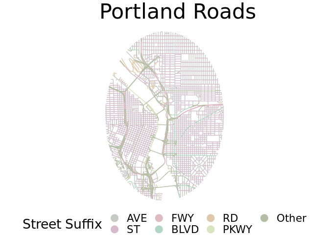

The following work flow is inspired by some posts I saw on Reddit visualizing the streets of major cities by their suffixes. I decided to do a version for Portland. I came up with my own workflow for creating these stylized maps with R.
Data for streets of Portland can be found on their open data website. This will differ for other cities but most major cities should have open data for various civic categories.
To find the street data I search on the keyword 'centerline' and found what I was looking for quickly.
Load Libraries
library(sf) # for spatial manipulation
library(dplyr) # data wrangling
library(ggplot2) # visualization and final graphing
library(leaflet) # interactive widget library
library(widgetframe)
library(odbc)
library(DBI)Find and Load Data
You could download the data and source it locally, but the sf package makes it easy to interact with a geojson API. Simply point to the endpoint and load as an sf object.
con <- dbConnect(RPostgreSQL::PostgreSQL(),
, host=Sys.getenv("postgre_ip")
, port='5432'
, dbname='parks'
, user='max'
, password = Sys.getenv("postgre_pswd"))
roads <- read_sf(con, "roads")
dbDisconnect(con)## [1] TRUEI'm reading the roads obj from a cleaned database file to reduce
# roads <- read_sf("https://opendata.arcgis.com/datasets/ad5ed4193110452aac2d9485df3298e2_68.geojson")
# inspect to find columns of interest
head(roads)## Simple feature collection with 6 features and 1 field
## geometry type: LINESTRING
## dimension: XY
## bbox: xmin: -122.6939 ymin: 45.52733 xmax: -122.6776 ymax: 45.53932
## geographic CRS: WGS 84
## # A tibble: 6 x 2
## FTYPE geometry
## <chr> <LINESTRING [°]>
## 1 " " (-122.6776 45.52733, -122.6776 45.52804)
## 2 "PL" (-122.6939 45.53916, -122.6939 45.53919)
## 3 "ST" (-122.6939 45.53916, -122.6939 45.53916)
## 4 "ST" (-122.6929 45.53913, -122.693 45.53916, -122.6931 45.53917, -122.6939 4…
## 5 "AVE" (-122.6916 45.53878, -122.6909 45.53932)
## 6 "AVE" (-122.6928 45.53775, -122.6929 45.53904, -122.6929 45.53909, -122.6929 …It is almost guaranteed that a spatial file you find from an ArcGIS API will have tons of fields you don't need. I like to drop anything that I won't need for further analysis.
After inspecting the data, I find the FTTYPE column. This step will take some digging with different datasets.
Prepare Data
Select only the relevant columns for plotting
roads <-
roads %>%
select(FTYPE)Now we need to create the canvas or boundaries of the final plot. City boundaries can be very odd and hard to capture so I'm just going to use a circle around the city center.
We'll check the roads data projection and put everything in WGS 84 for simplicity. If you are wondering what WGS 84 is you can read about it here.
roads <- st_transform(roads, crs = 4326) # WGS 84Now we select a point to center the map around. I played around with this a bit using Google Earth and chose a point in the Willamette River. Hard pressing with Google Maps will also give you the lat/lon in decimal degrees.
portland <- data.frame(y = 45.526104,
x = -122.666917) %>%
st_as_sf(coords = c("x", "y"),
crs = 4326) # chose the same coordinate system as aboveCreate a buffer around the chosen point to clip the road data to. The data should really be in a projected coordinate system but this approach still works. The dist value here is arc degrees which is a difficult unit to use, but its essentially a distance value. Projecting the data to a UTM coordinate system is probably a better approach.
Check the buffer distance. This was an iterative process to get the dist value correct made easier with {Leaflet}.
Also note that the package {widgetframe} is being used here to embed the leaflet map into RMarkdown. I haven't used this package extensively but it fixes a bug where leaflet maps don't embed properly.
buf <- st_buffer(portland, dist = .03)
l <- leaflet(buf) %>%
addPolygons() %>%
addTiles()
widgetframe::frameWidget(l, width = "100%")Crop the roads layer once the buffer area looks good to you.
roads <- st_intersection(roads, buf) There are lots of suffixes that are not well represented in the data. To keep the legend a reasonable size I'm selecting only the top seven suffixes.
top_seven_roads <-
roads %>%
as.data.frame() %>% # drop geometry column
dplyr::count(FTYPE) %>%
arrange(desc(n)) %>% # arrange from most to least
slice(1:7) %>% # take the top seven
pull(FTYPE)
top_seven_roads## [1] "AVE" "ST" "RAMP" "FWY" "BLVD" "RD" "PKWY"Again to keep the legend a reasonable size we set all other suffixes to 'Other'. I'm also going to reclass RAMP as other. This is an aesthetic choice since on and off ramps aren't really roads and I want to keep the legend more manageable.
roads <- roads %>%
mutate(FTYPE = case_when(FTYPE == "RAMP" ~ "Other",
FTYPE %in% top_seven_roads ~ FTYPE,
TRUE ~ "Other"))
roads$FTYPE %>%
unique()## [1] "Other" "ST" "AVE" "PKWY" "FWY" "RD" "BLVD"Prep data for plotting
Create a vector of colors that is associated with each road type and reclassify the characters to factors. This allows the legend to be in the desired order.
# convert to factor for proper ordering in the final plot
# There is a tidy way of doing this, this method is more natural for me
roads$FTYPE <- factor(roads$FTYPE,
levels = c("AVE",
"ST",
"FWY",
"BLVD",
"RD",
"PKWY",
"Other"))Plotting
Plot out the finished product. I put the most time into this part and there are probably other ways to achieve the same results with different ggplot functions. I've added comments to help identify what does what. You may have to change the plot.title depending on the output size of the png.
I used the {cartography} package for colors here and I would say color choice makes a large difference in the final product. There is plenty of room to play around with the output.
# Define a col pallete
pal <- c('#c7c9c7','#d5bbcb','#e1b9c1','#afd7c3','#dec8ab','#d8e4be','#b3bea4')
ggplot() +
geom_sf(data = roads,
aes(colour = FTYPE), # color by column value
show.legend = "point") + # get legend as circles
theme_void() + # remove default gray background
theme(legend.position = "bottom",
text = element_text(size = 20)) + # set all text large. Play with this number based on desired img size
guides(color = guide_legend(nrow = 2, # have legend all on one line
override.aes = (list(size = 5)))) + # change size of point symbols in legend
scale_color_manual(name = "Street Suffix", # name of legend
values = pal) + # our selected color palette
ggtitle("Portland Roads") +
theme(plot.title = element_text(size = 32))
{kind=link}
Save output
# ggsave("www/portlandstreets.png",
# width = 12,
# height = 18,
# units = "in", # specify units of above height and width
# dpi = 400) # dots per inchThis workflow creates a nice stylized map of street suffixes for Portland that can be extended to any area where you have road data.